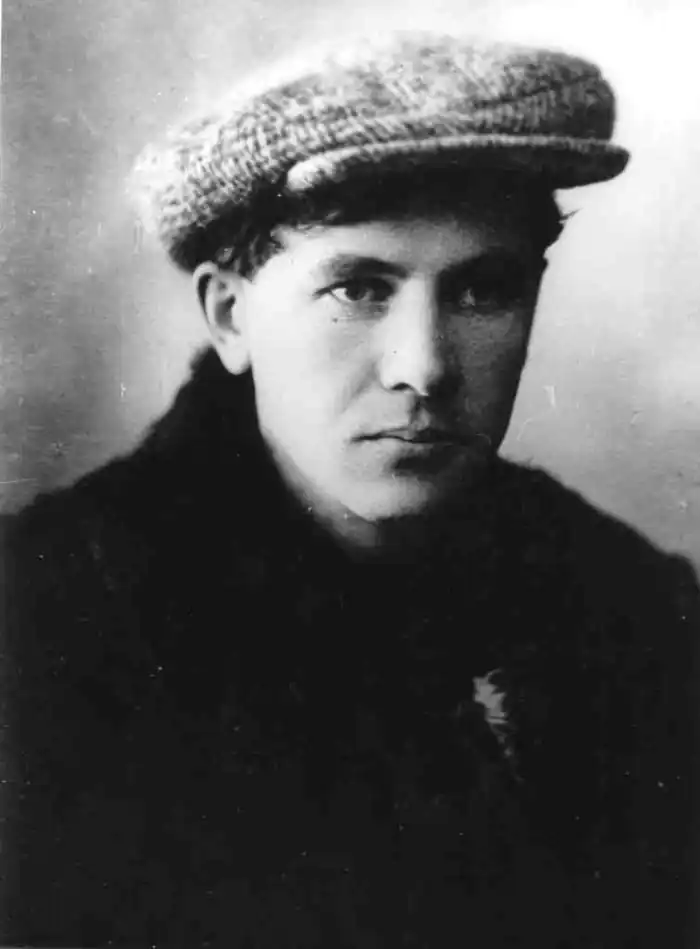

Справжнє ім'я Дмитро Михайлович Могилянський. Народився 28.01.1901 р. у Чернігові в родині письменника Михайла Могилянського, яка до революції жила в Петербурзі. У 1917 р. Могилянські повернулися до Чернігова, у 1919-му Дмитро закінчив гімназію, був членом "Просвіти", співпрацював з газетою "Комуністична Боротьба", а з 1921-го – з газетою "Красное Знамя".
З 1925 р. проживав у Києві, з 1930-го – у Харкові. До арешту працював літературним співробітником часописів "Пролетарська Правда", "Знання", "Піонерія", "Соціалістична Перебудова", "Молодий Ударник", "Знание", у видавництві "Радянська школа".
Перші вірші опублікував 1918 р. у чернігівській земській газеті. Вірші та оповідання друкував у додатку до газети "Вісті" ("Література, Наука, Мистецтво"), у "Новій Громаді", "Червоному Шляху", "Житті й Революції", "Глобусі", "Кіно", "Всесвіті", "Зорі". Опублікував повість "Полонені шуми", видав дві збірки оповідань "Ведмеді танцюють" (1927) і "Сад" (1930). У грудні 1934 р. видавництво "Радянська школа" перенесли до Києва. Поет залишився без роботи, і сестра Лідія запросила його до Дмитрова на будівництво каналу Москва – Волга, де було більше можливостей для творчої праці. З лютого до вересня 1935-го Д. Тась був літпрацівником, але потім повернувся до Харкова, напередодні арешту працював у редакції газети "Соціалістична Харківщина". Його заарештували 30.01.1938 р. Після арешту повернули до Дмитрова і тримали у в'язниці Дмитлагеря НКВС, де він спробував покінчити життя самогубством: "10 февраля 1938 г. в 8 часов утра камера № 6 была выпущена на прогулку во двор. В то время как дежурный т. Никитенко отошел в коридор, арестованный Могилянский зашел в уборную и повесился на полотенце, но был замечен и снят. 19.02.1938 г. Рябцев". "Приговорен: тройкой при УНКВД по Московской обл. 25 февраля 1938 г., обв.: в активной контрреволюционной работе на Украине. Расстрелян 28 февраля 1938 г. Место захоронения – Московская обл., Бутово".